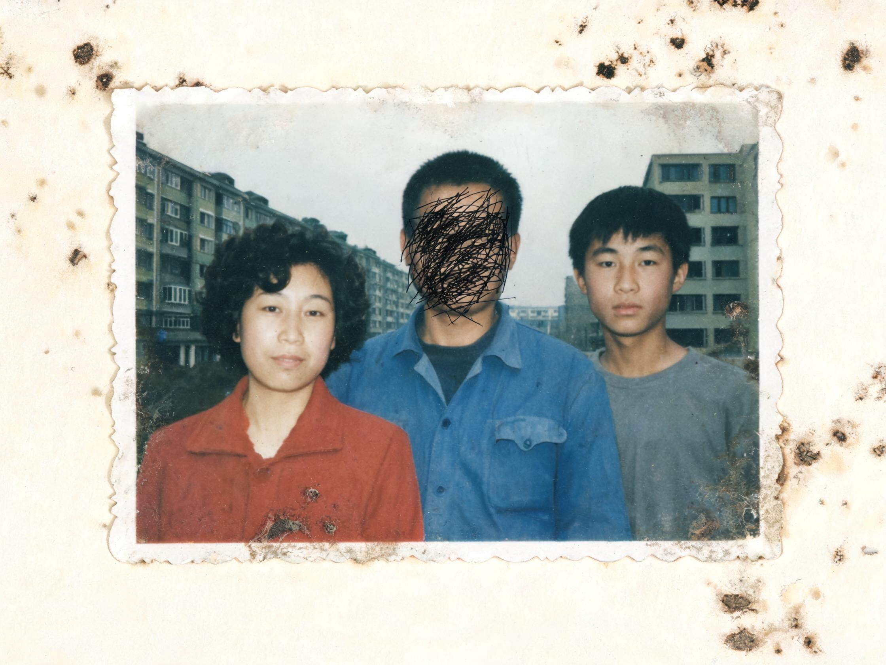

傍晚六点下班，换下药厂的工作服。妻子在熬粥，我去喝几瓶啤酒。
如此生活三十年，直到大厦崩塌。

2026年8月17日凌晨，本地一个早已停止更新的旧站上，出现了一条新帖。发帖人叫陈默，四十六岁。帖子里只有一张照片，和一段很短的话。
我爸叫陈卫东，第四制药厂仓库保管员，工号 04071。
1998年10月7日傍晚六点，他下班回家。我妈在熬粥。他喝了几瓶啤酒，出门，再没有回来。
第二天，厂里主楼爆破。没有人找到他。他留下的东西锁在一个铁皮柜里，钥匙在1998年就丢了。
二十八年了。我想知道他最后去了哪里，想让他有一个名字。
如果有人见过他，或者记得那天晚上厂里发生了什么，请回帖。
照片是从一只生锈的饼干盒里找到的。父亲的脸被圆珠笔划掉了，划得很用力，纸背都起了毛。母亲说不是她划的。
档案馆把这批材料编成了一份私人卷宗。借阅记录显示，你是第一个翻开它的人。
卷宗里的第一份材料，是1998年10月8日的《燕赵晚报》。头版右下角有一条不到三百字的消息：第四制药厂主楼昨夜定向爆破，一名职工下落不明。
提示：这不是一个靠猜的游戏。每一把锁的密码，都能在前一页的细节里找到。找不到时，回到上一页再翻一遍。